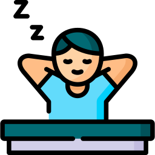

No Coding, Mending Mewing
CTRL + X
Aktif
Loading...
Buka Situs
Edit URL
Terakhir: Baru saja
Klik: 0
Bantuan
Gunakan CTRL + X untuk membuka situs
Tambahkan ke favorit untuk akses cepat
Bagikan URL dengan teman
Ubah tema gelap/terang
Tutup